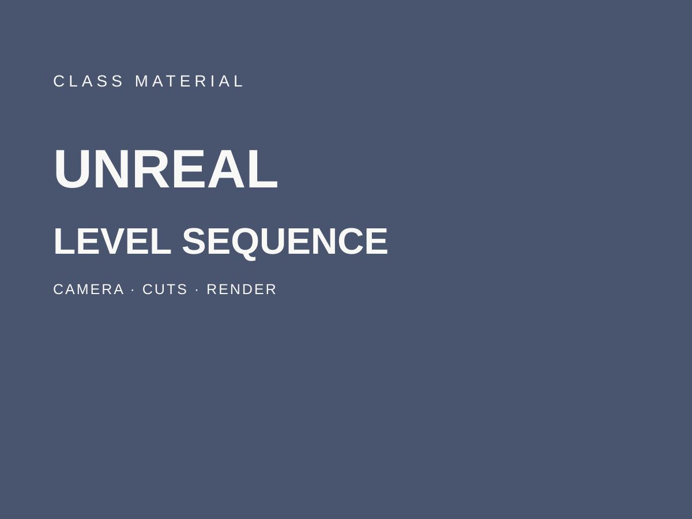

Unreal Level Sequence에 CLO 모션과 카메라 구성하기 ②
2026.08.30
LiveSync Save로 만든 아바타 Skeletal Mesh·Animation Sequence와 가먼트 Geometry Cache를 Level Sequence에 넣고, 세로형 런웨이 카메라·포커스·키프레임을 설정하는 매뉴얼입니다.
이 매뉴얼은 LiveSync Save로 만든 CLO 아바타와 가먼트 Asset을 Unreal의 Level Sequence에서 함께 재생하고, 세로형 런웨이 영상을 위한 카메라를 구성하는 흐름을 다룹니다. 시작하기 전에 Content Browser에 아바타 Skeletal Mesh와 Animation Sequence, 가먼트 Geometry Cache가 저장되어 있어야 합니다. LiveSync로 모션을 Update했더라도 Save를 누르지 않았다면 이 Asset을 Sequencer에 넣을 수 없습니다. Level Sequence는 LiveSync가 자동으로 만들지 않으므로 학생이 직접 새로 만듭니다.
이번 매뉴얼에서 완성할 결과
□ Level Sequence Asset을 직접 만들고 열 수 있습니다. □ 아바타 Skeletal Mesh와 Animation Sequence, 가먼트 Geometry Cache를 찾을 수 있습니다. □ 아바타 Transform을 복사해 가먼트에 같은 값으로 적용할 수 있습니다. □ 아바타 Animation Track과 가먼트 Geometry Cache Track을 같은 시작 프레임에 배치할 수 있습니다. □ 두 Track을 넣은 뒤 아바타와 의상이 애니메이션 첫 포즈에서 맞는지 확인할 수 있습니다. □ Cine Camera Actor와 Camera Cuts Track을 만들 수 있습니다. □ 세로형 구도에 맞춰 35mm 또는 45mm 렌즈, 포커스와 키프레임을 설정할 수 있습니다. □ Sequencer Play와 Scrub으로 런웨이 장면을 확인하고 Save All 할 수 있습니다.
Level Sequence와 Sequencer는 무엇일까?
Level Sequence는 카메라, 캐릭터, 의상, 조명과 애니메이션 Track을 저장하는 Asset입니다. Sequencer는 Level Sequence를 편집하는 타임라인 화면입니다. Content Browser에 있는 Level Sequence Asset은 편집 데이터를 저장하고, Level 안의 Level Sequence Actor는 그 Asset을 현재 장면과 연결합니다. 학생 작업에서는 먼저 Content Browser에 Sequence Asset을 만들고 더블클릭해 Sequencer를 여는 흐름만 기억하면 됩니다.
1. 런웨이용 Level Sequence 만들기
1. Content Browser의 학생 작업 폴더 안에 Cinematics 폴더를 만듭니다. 2. 폴더 안의 빈 공간에서 우클릭 → Cinematics → Level Sequence를 선택합니다. 3. 이름을 LS_이름_Runway_Main으로 지정합니다. 4. Level Sequence를 더블클릭해 Sequencer를 엽니다. 5. Playback Range를 수업 분량에 맞게 설정합니다. 첫 실습은 30fps 기준 0–300프레임, 약 10초 정도면 충분합니다. 수업 템플릿 FPS가 따로 있으면 그 값을 우선합니다. 6. CLO Animation Editor와 Sequencer의 FPS가 같은지 확인합니다. 7. Unreal의 현재 Level과 Level Sequence를 모두 저장합니다.
2. LiveSync Save로 만든 Asset을 확인합니다
Content Browser에서 LiveSync Save 폴더를 열고 Asset Type을 확인합니다. 이번 수업에서 사용할 기본 조합은 ① 아바타 Skeletal Mesh ② 아바타 Animation Sequence ③ 가먼트 Geometry Cache입니다. Avatar Cache도 함께 저장되지만 Sequencer의 아바타 재생에는 Skeletal Mesh와 Animation Sequence를 사용합니다. 이 세 Asset은 하나의 완성된 Level Sequence가 아니라 각각 저장된 데이터입니다. LiveSync의 Save를 누르지 않았다면 먼저 이전 매뉴얼로 돌아가 Asset을 생성합니다. 이름이 비슷할 때는 Thumbnail만 보지 말고 Content Browser의 Type 열이나 Asset Editor를 열어 Skeletal Mesh, Animation Sequence, Geometry Cache를 구분합니다.
3. 아바타와 가먼트를 Level에 배치하고 Transform 맞추기
1. LiveSync 저장 폴더에서 아바타 Skeletal Mesh와 가먼트 Geometry Cache를 찾습니다. 2. Content Browser에서 아바타 Skeletal Mesh를 Level Viewport로 드래그합니다. 3. 가먼트 Geometry Cache도 Level Viewport로 드래그합니다. 4. 아바타 Actor를 선택하고 Details → Transform의 Location·Rotation·Scale 값을 복사합니다. 5. 가먼트 Actor를 선택하고 같은 Transform 값을 붙여넣습니다. 세 값이 모두 같은지 확인합니다. 6. Outliner에서 두 Actor의 이름을 SK_Avatar와 GC_Garment처럼 구분하기 쉽게 바꿉니다. 7. Level과 두 Actor의 배치를 저장합니다. 이 단계에서는 아바타와 가먼트가 서로 어긋나 보일 수 있습니다. 모션 Asset은 아직 Sequencer의 첫 프레임에 적용되지 않았기 때문입니다. 지금 눈대중으로 가먼트를 따로 이동하지 말고, 다음 단계에서 두 모션 Track을 먼저 넣습니다.
4. 아바타 Skeletal Mesh에 Animation Sequence 넣기
1. Level에 배치한 SK_Avatar Actor를 선택합니다. 2. Sequencer의 + Track → Actor to Sequencer에서 SK_Avatar를 추가합니다. 3. 추가된 Skeletal Mesh Actor Track의 + Track에서 Animation을 선택합니다. 4. LiveSync Save로 생성한 아바타 Animation Sequence를 지정합니다. 5. Animation Section의 왼쪽 끝을 시작 프레임 0에 맞춥니다. 6. Playhead를 0프레임에 놓습니다. 아바타가 저장 당시의 임시 자세가 아니라 애니메이션의 첫 포즈로 바뀌는지 확인합니다. 7. Playhead를 앞뒤로 Scrub해 아바타 모션이 정상적으로 재생되는지 확인합니다. 8. Section 길이가 Playback Range와 맞는지 확인합니다.
5. 의상 Geometry Cache를 같은 시작 프레임에 넣기
1. Level에 배치한 GC_Garment Actor를 선택합니다. 2. Sequencer의 + Track → Actor to Sequencer로 GC_Garment를 추가합니다. 3. 가먼트 Actor의 + Track에서 Geometry Cache Track을 추가합니다. 4. LiveSync Save로 생성한 가먼트 Geometry Cache를 지정합니다. 5. Geometry Cache Section의 시작 프레임을 아바타 Animation Section과 같은 0프레임에 맞춥니다. 6. Playhead를 0프레임에 놓습니다. 아바타와 가먼트가 모두 애니메이션 첫 포즈로 바뀌고 위치가 맞아떨어지는지 확인합니다. 7. Playhead를 앞뒤로 움직여 아바타 모션과 가먼트 시뮬레이션이 함께 재생되는지 확인합니다. 8. 한쪽만 늦게 시작하면 두 Section의 시작 프레임과 Start Offset을 확인합니다. 9. 재생 속도가 다르면 CLO, LiveSync와 Sequencer의 FPS를 먼저 확인한 뒤 Play Rate를 수정합니다. 모션 Track을 넣기 전의 어긋남만 보고 Transform을 추가 보정하지 않습니다. 두 Section을 같은 시작 프레임에 넣은 뒤에도 어긋날 때만 Transform 복사 여부, 시작 프레임, Offset과 FPS를 다시 확인합니다.
6. Cine Camera와 Camera Cuts 만들기
1. Sequencer 상단의 Create Camera 버튼을 누릅니다. 2. Cine Camera Actor, Camera Track과 Camera Cuts Track이 자동으로 만들어지는지 확인합니다. 3. Camera Cuts Track의 카메라 아이콘을 켜 Viewport를 현재 카메라에 고정합니다. 4. Playhead를 시작 프레임에 둡니다. 5. 최종 영상은 세로가 긴 런웨이 영상이므로 9:16 세이프 프레임을 기준으로 전신이 들어오게 구도를 잡습니다. 실제 출력 해상도 설정은 다음 렌더 수업에서 진행합니다. 6. Cine Camera Actor의 Current Focal Length를 35mm 또는 45mm로 설정합니다. 35mm는 전신과 런웨이 공간을 함께 보여줄 때, 45mm는 인물을 조금 더 압축해 의상과 디테일을 보여줄 때 사용합니다. 7. 발이 잘리거나 원근 왜곡이 심하면 렌즈 수치를 크게 바꾸기보다 카메라 거리를 먼저 조정합니다. 8. Camera Transform에 시작 Key를 추가해 구도를 고정합니다.
7. 카메라 포커스 맞추기
1. Cine Camera Actor를 선택하고 Details → Focus Settings를 엽니다. 2. Focus Method를 Manual로 설정합니다. 움직이는 인물을 계속 따라가야 할 때는 Tracking을 사용할 수 있지만, 첫 실습은 Manual로 시작합니다. 3. Manual Focus Distance의 스포이드가 보이면 Viewport에서 아바타의 얼굴이나 상체를 찍습니다. 스포이드가 없거나 원하는 지점이 잡히지 않으면 거리를 직접 조정합니다. 4. Draw Debug Focus Plane을 잠시 켜 초점면이 아바타에 닿는지 확인합니다. 확인 후에는 반드시 끕니다. 5. 카메라와 인물 사이의 거리가 크게 바뀌면 Manual Focus Distance에도 시작과 끝 Key를 추가합니다. 6. 초점이 맞았는지는 얼굴과 의상 디테일을 확대해 확인합니다. Depth of Field가 너무 강하면 Aperture 값을 조정해 초점 범위를 넓힙니다.
8. 카메라 키프레임과 Auto Key 사용하기
수동으로 Key를 찍을 때는 ① 시작 프레임에 Playhead를 놓고 ② Camera Transform 옆의 다이아몬드 버튼을 눌러 첫 Key를 만든 뒤 ③ Playhead를 다음 시점으로 옮기고 ④ 카메라를 이동한 다음 다이아몬드 버튼을 다시 눌러 두 번째 Key를 만듭니다. 타임라인을 Scrub해 이동 속도와 구도를 확인합니다. Sequencer Toolbar의 Auto Key를 켜면 이미 Key가 있는 Track의 Transform이나 지원되는 속성을 다른 프레임에서 변경할 때 새 Key가 자동으로 추가됩니다. 빈 Track에는 자동으로 Key가 생기지 않으므로 시작 Key를 먼저 만듭니다. 카메라를 움직인 뒤 실제로 Key가 생겼는지 타임라인에서 반드시 확인합니다. 원하지 않는 속성까지 기록될 수 있으므로 실습이 끝나면 Auto Key를 끕니다. 처음에는 빠른 회전보다 천천히 전진하거나 옆으로 이동하는 단순한 동작을 사용합니다. 카메라가 고정이어도 시작 프레임에 Transform Key를 하나 남겨 구도가 바뀌지 않게 합니다.
9. 모션과 카메라를 함께 재생하기
1. Playback Range의 시작으로 이동합니다. 2. Camera Cuts Track의 Lock Viewport를 켭니다. 3. Sequencer의 Play 버튼 또는 Space를 눌러 재생합니다. 4. 아바타 Animation Sequence, 가먼트 Geometry Cache와 카메라가 같은 시간에 작동하는지 확인합니다. 5. 0프레임에서 아바타와 가먼트가 같은 첫 포즈와 위치로 맞는지 확인합니다. 6. 발이 바닥에서 미끄러지는지, 가먼트가 아바타와 어긋나는지, 카메라가 세로 구도에서 모델을 놓치는지 확인합니다. 7. 문제가 있는 프레임에서 멈추고 Playhead 위치를 기록합니다. 8. 처음부터 끝까지 한 번 정상 재생되면 Level, Level Sequence와 관련 Asset을 Save All 합니다. 이번 시간은 Sequencer에서 모션과 카메라를 확인하는 단계까지 진행합니다. 출력 해상도와 렌더 설정은 다음 시간에 다룹니다.
저장 전에 꼭 확인할 여섯 가지
1. 아바타 Transform을 가먼트에 같은 값으로 적용했는가? 2. 아바타 Animation Section과 가먼트 Geometry Cache Section이 같은 프레임에서 시작하는가? 3. 0프레임에서 아바타와 가먼트가 같은 첫 포즈와 위치로 맞는가? 4. CLO와 Sequencer의 FPS가 같은가? 5. Cine Camera가 35mm 또는 45mm이고 세로형 구도에 맞는가? 6. 포커스와 카메라 Key가 타임라인에 정상적으로 기록됐는가? 7. Level, Level Sequence와 관련 Asset을 Save All 했는가?
자주 생기는 문제
아바타가 움직이지 않으면 Skeletal Mesh Actor 아래에 Animation Track과 Animation Sequence Section이 있는지 확인합니다. 가먼트만 멈춰 있으면 가먼트 Actor 아래에 Geometry Cache Track과 Garment Cache Section이 있는지 확인합니다. Track을 넣기 전 아바타와 가먼트가 어긋나 보이는 것은 모션의 첫 포즈가 아직 적용되지 않은 상태일 수 있습니다. 두 Section을 0프레임에 넣은 뒤 다시 확인합니다. Track을 넣은 뒤에도 어긋나면 가먼트에 아바타 Transform을 정확히 복사했는지, 두 Section의 시작 프레임, Start Offset, Play Rate와 FPS가 같은지 확인합니다. 카메라가 재생되지 않으면 Camera Cuts Track에 현재 카메라가 연결됐는지, Lock Viewport가 켜졌는지 확인합니다. Auto Key를 켰는데 Key가 생기지 않으면 Playhead를 다른 프레임으로 옮겼는지, Camera Transform Track이 있는지, 실제 속성 값이 바뀌었는지 확인합니다. 초점이 흐리면 Focus Method, Manual Focus Distance와 Aperture를 확인합니다. Draw Debug Focus Plane은 확인 후 끕니다. Asset 이름이나 저장 폴더를 변경한 뒤 Track이 빨간색이 되면 Missing Binding입니다. 임의로 복제하기 전에 원래 Asset 위치와 Sequence Binding을 확인합니다.
최종 체크리스트
□ LS_이름_Runway_Main을 직접 만들고 저장했습니다. □ LiveSync 폴더에서 아바타 Skeletal Mesh·Animation Sequence와 가먼트 Geometry Cache를 확인했습니다. □ 아바타 Transform을 가먼트에 복사했습니다. □ 아바타에 Animation Track, 가먼트에 Geometry Cache Track을 추가했습니다. □ 두 Section이 같은 0프레임에서 시작합니다. □ 0프레임에서 아바타와 가먼트의 첫 포즈와 위치가 맞습니다. □ Cine Camera와 Camera Cuts Track이 있습니다. □ 카메라는 세로형 구도에 맞춰 35mm 또는 45mm로 설정했습니다. □ 포커스를 맞추고 Debug Focus Plane을 껐습니다. □ 수동 Key 또는 Auto Key로 카메라 움직임을 만들었습니다. □ 처음부터 끝까지 아바타, 가먼트와 카메라를 재생해 확인했습니다. □ Level, Level Sequence와 관련 Asset을 Save All 했습니다. 렌더 설정과 출력은 다음 시간에 진행합니다.